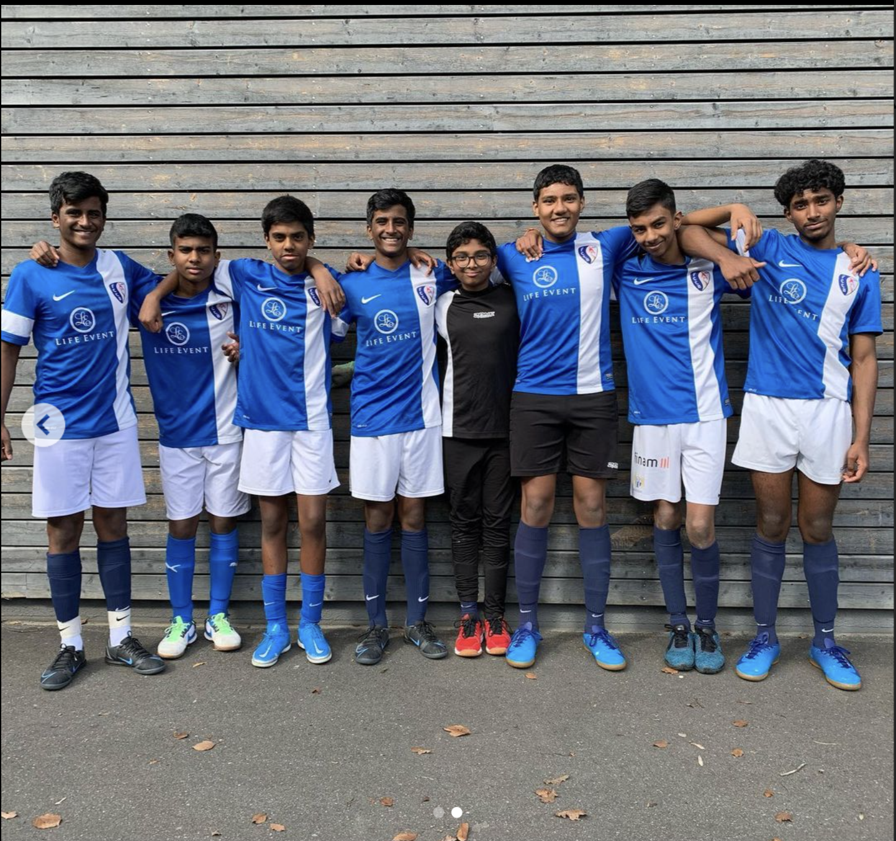

Unser Nachwuchs
Unser Nachwuchs ist die Zukunft des Vereins. Hier erfahren Sie mehr über unsere Nachwuchsmannschaften. Unsere Nachwuchsmannschaften bieten jungen Talenten die Möglichkeit, ihre fußballerischen Fähigkeiten zu entwickeln und Teil unseres Vereins zu werden. Die Jugendlichen trainieren regelmäßig und werden von erfahrenen Trainern betreut. Wir legen großen Wert auf die sportliche und persönliche Entwicklung unserer jungen Spieler. Neben den sportlichen Aktivitäten fördern wir auch den Teamgeist und den respektvollen Umgang miteinander. Unsere Nachwuchsteams nehmen an zahlreichen Turnieren teil und haben bereits viele Erfolge erzielt. Durch kontinuierliches Training und Engagement streben wir danach, die nächsten Fußballstars hervorzubringen. Wir sind stolz auf die Fortschritte und Erfolge unserer Jugendspieler. Die Unterstützung der Eltern und Fans spielt eine wichtige Rolle in der Entwicklung unserer Nachwuchsspieler.
Lizenziert von fccityboyszh